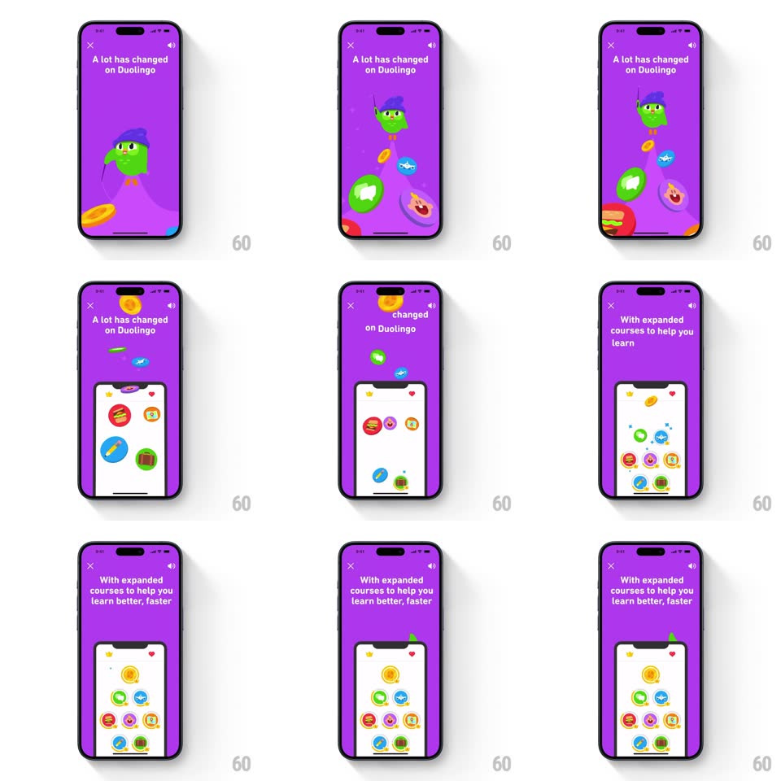

Media
Frame-by-frame

Rebuild this interaction 1:1: Duolingo's expanded-courses onboarding beat - wizard Duo drops down on purple, then bursts into a shower of colorful course icons (music, math, chess, language) that fly outward and rain down into a white phone mock rising from the bottom, landing as the mock's course grid under "With expanded courses to help you learn better, faster".

Rebuild this interaction 1:1: Duolingo's expanded-courses onboarding beat - wizard Duo drops down on purple, then bursts into a shower of colorful course icons (music, math, chess, language) that fly outward and rain down into a white phone mock rising from the bottom, landing as the mock's course grid under "With expanded courses to help you learn better, faster". ## Integration Integration: stack-agnostic spec - springs given as stiffness/damping, timed motions as duration + curve; map every value to your framework and animation library of choice. ## Scene Purple screen, headline "A lot has changed on Duolingo" -> "With expanded courses to help you learn better, faster"; wizard Duo; a cascade of round course icons; a white phone mock that fills with a course-icon grid. ## Motion spec Pattern: character-to-confetti metamorphosis with a catching container. - Duo hangs from the top edge, then drops toward center (spring ~300/18, 450ms). - At center Duo pops (scale 1 -> 1.3 -> 0, 250ms) and bursts into ~8 course icons that fly outward on radial paths (500ms, ease-out) with gravity. - The white phone mock rises from the bottom (spring ~360/24, 400ms) as the icons arc down toward it. - Icons fall into the mock and snap into grid slots (staggered 60ms, spring ~380/26), forming the full course grid; the headline swaps to "With expanded courses to help you learn better, faster" (word slide, 300ms). ## Calibration - The icons are circular, brightly colored (red, green, blue, gold) - the palette pops against the purple. - Icons that land in the mock shrink slightly (1 -> 0.8) to match grid scale. ## Reduced motion Duo fades, icons fade into the grid in place (200ms staggered); mock rises with a simple ease. ## Don't miss - The icons' landing is synchronized with the mock's rise - they read as caught, not overlaid. - The final grid state is a real UI moment, not an illustration - it previews the courses screen.